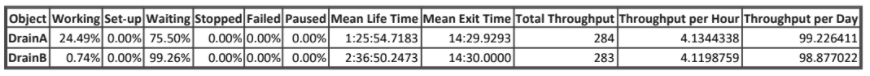
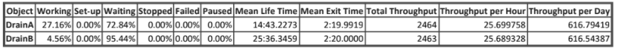
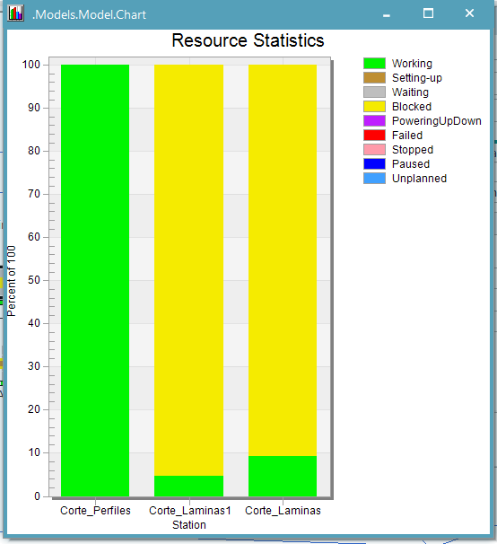
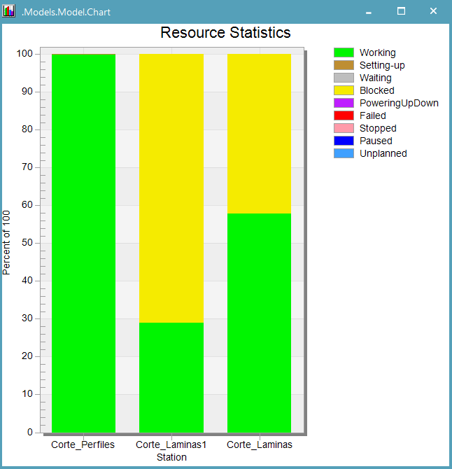
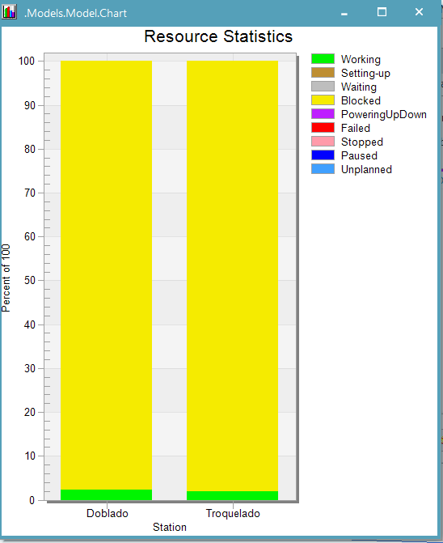
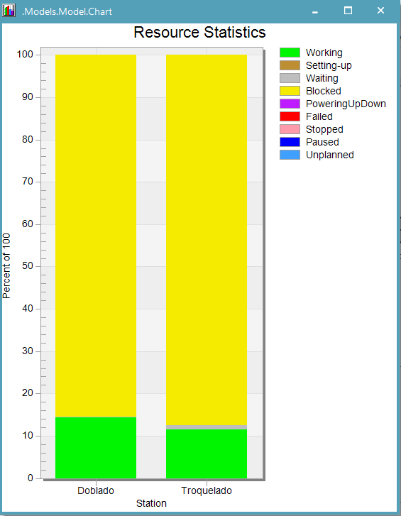
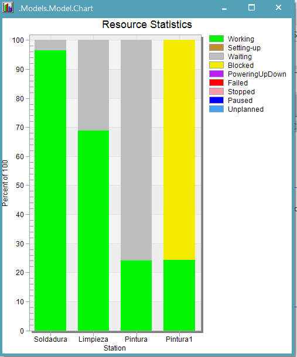
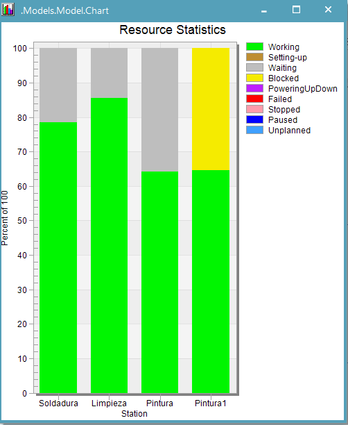

Silla de bus intermunicipal de plastico
Como puedes ver, ambos modelos son de sillas para autobuses, con asientos de plástico y bases metálicas. Las principales diferencias radican en la forma del asiento y que una de las dos es acoginada.
Silla de bus intermunicipal con cojin de tela
Como te podras imaginar el proceso se divide en dos materiales principalmente (y el acolchado ;)), para formar los asientos, usamos maquinas de inyeccion de plastico, donde con moldes predefinidos logramos conseguir piezas exactamente iguales ¡cada 125 segundos!
Tecnomatix Plant Simulation
Planta de Producción
¡Son más parecidas de lo que crees realmente!
En nuestra fabrica encontraras que aunque tipo de silla, sus materiales y formas puedan cambiar, es posible
lograr que compartan en gran medida su proceso de fabricación. Hoy te enseñaremos el proceso de fabricación
de nuestros dos productos estrella, veras donde divergen los procesos y donde son ¡prácticamente iguales!
Si ahora miramos la base donde se ubica el asiento ¡Esta hecha de metal!, partimos desde laminas y perfiles regulares
y rapidamente mediante los diversos y divertidos procesos que puedes ver en nuestro diagrama, les damos la forma adecuada
para ensamblar junto a su parte plástica.
Comparación de producción
¿Dónde esta la clave entonces? Es fácil notar que el mecanizado de las partes metálicas tiene muchos más
procesos y toma más tiempo, pero tenemos un secreto ;) no se lo cuentes a nadie, se llama automatización
tras un proceso de investigación y modelado identificamos la linea de procesos más importante en cuestiones
de tiempo (quiza lo conozcas como ruta critica), seleccionamos los procesos más demandantes y... Así es
¡Utilizamos robots! para hacerlos más rapidos, es por esto que logramos una increíble producción de sillas a
¡bajo costo!
Quieres saber más?, sigue leyendo ;)
Producción Manual
Producción Automatizada
Comparación de Producción total
 Flujo de Material
A continuación, se muestran las estadisticas de distintas estaciones en las cuales se realizaron un proceso de automatización.
 A la izquierda se puede observar las estadisticas
 A la izquierda se puede observar las estadisticas
 A la izquierda se puede observar las estadisticas
Value Stream Mapping
El Value Stream Mapping nos permite visualizar la totalidad del proyecto, observando tanto el flujo de información como de materiales necesarios para el producto. Para este caso particular, se observa el flujo de ambas sillas desde la llegada del insumo del proveedor hasta la llegada del cliente final, adicional permite observar las actividades que no agregan valor al proceso para una posterior eliminación.